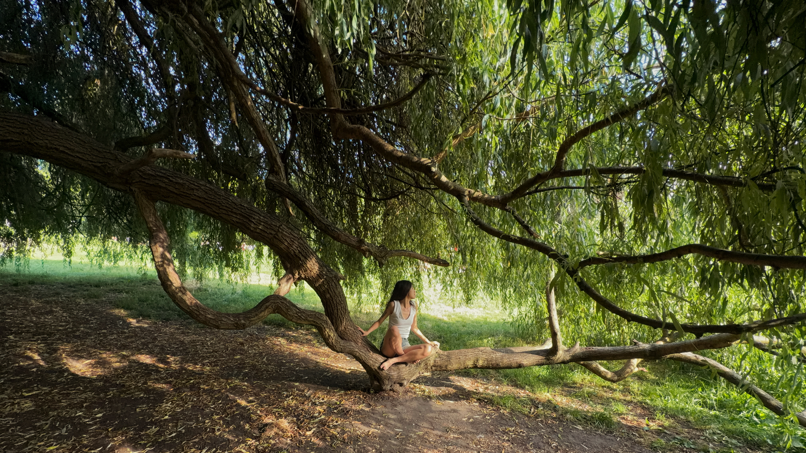

ABOUT / 关于
纪彤心JADE Tongxin Ji
纪彤心，2002年生。创作常以摄影、影像、行为等综合媒介展开，围绕自我身份、身体经验、记忆与物像之间的关系进行探索。
Jade Tongxin Ji, born in 2002. The practice often works across photography, moving image and performance, exploring self-identity, bodily experience, memory and the relationship between image and object.
2024.09-至今 硕士，西安美术学院影视动画系，摄影艺术方向
2024.09-present MFA Candidate, Photography Art, Department of Film and Animation, Xi'an Academy of Fine Arts
2020.09-2024.06 本科，西安美术学院影视动画系，摄影专业
2020.09-2024.06 BFA, Photography, Department of Film and Animation, Xi'an Academy of Fine Arts
2026.04-2026.06 巴黎艺术城驻地，法国巴黎
2026.04-2026.06 Artist Residency, Cité Internationale des Arts, Paris, France
2025.10-2025.11 鄠邑区蔡家坡村驻地，陕西西安
2025.10-2025.11 Artist Residency, Caijiapo Village, Huyi District, Xi'an, Shaanxi, China
参展与获奖
Exhibitions / Awards
丛生——首届两岸艺术双年展，“浪隙之屿”单元，参展
Congsheng: The First Cross-Strait Art Biennial, Islands in the Wave Gaps section, exhibited
作品｜《疑树》 / Epitaph
第六届国际摄影研讨会暨2025丽水摄影节院校组，参展
6th International Photography Symposium and 2025 Lishui Photography Festival, Academy Section, exhibited
作品｜《疑树》 / Epitaph
VIEW EXHIBITION ↗2025年度仁川开放港国际大学生摄影节，入围
Incheon Open Port International University Student Photography Festival, shortlisted
作品｜《疑树》 / Epitaph
“关注与共鸣——陕西省高校优秀数字影像展”，参展
Attention and Resonance: Outstanding Digital Image Exhibition of Shaanxi Universities, exhibited
作品｜《疑树》 / Epitaph
A Frame 浓缩城市计划，参展
A Frame Condensed City Project, exhibited
作品｜《新年电梯》 / New Year Elevator
VIEW EXHIBITION ↗第12届学院摄影奖暨第12届学院优秀摄影作品展，金奖
12th Academy Photography Award and 12th Academy Outstanding Photography Works Exhibition, Gold Award
作品｜《疑树》 / Epitaph
第四届“未来·星丛”奖美术与书法优秀作品展，入选/参展
4th Future Star Cluster Award Art and Calligraphy Exhibition, selected and exhibited
作品｜《疑树》 / Epitaph
VIEW EXHIBITION ↗第24届平遥国际摄影大展，院校优秀奖
24th Pingyao International Photography Festival, Outstanding Academy Award
作品｜《疑树》 / Epitaph
VIEW EXHIBITION ↗法国阿尔勒 Fisheye “10sur10” 展览，参展
Fisheye “10sur10” Exhibition, Arles, France, exhibited
作品｜《疑树》 / Epitaph
VIEW EXHIBITION ↗第六届1839摄影奖，入围
6th 1839 Photography Award, shortlisted
作品｜《疑树》 / Epitaph
2024届“无界西美”西安美术学院毕业季展览，一等奖
2024 Wujie Ximei Graduation Season Exhibition, Xi'an Academy of Fine Arts, First Prize
作品｜《疑树》 / Epitaph
VIEW EXHIBITION ↗
第10届学院优秀摄影作品展暨第10届学院摄影奖，优秀作品奖
10th Academy Outstanding Photography Works Exhibition and 10th Academy Photography Award, Outstanding Work Award
作品｜《上游的风》 / ON THE WAY